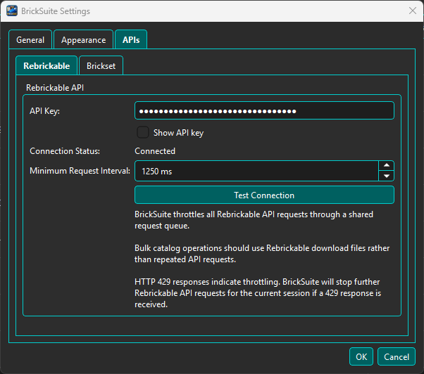
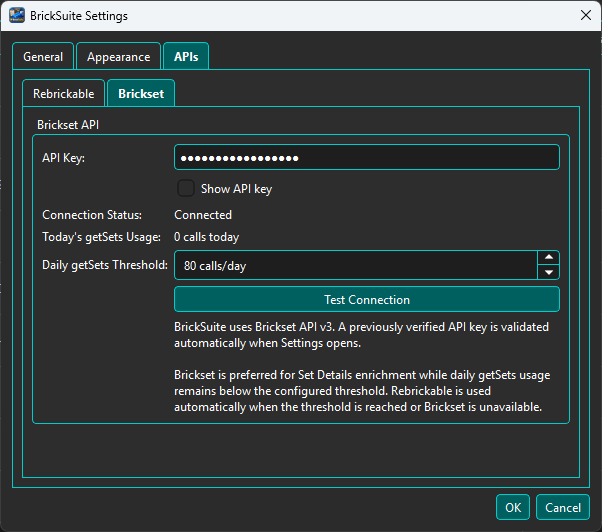
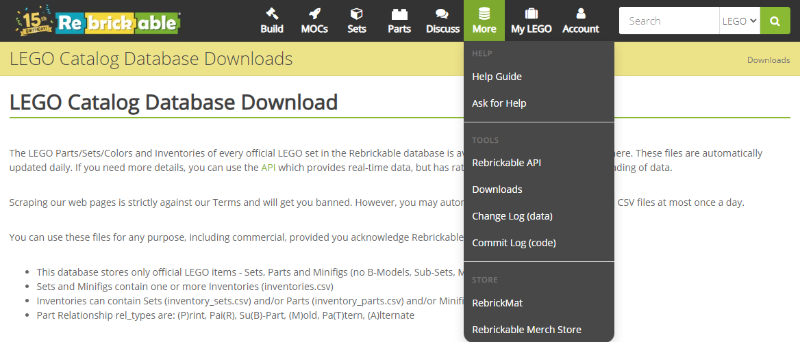
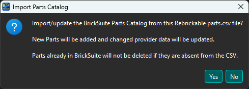
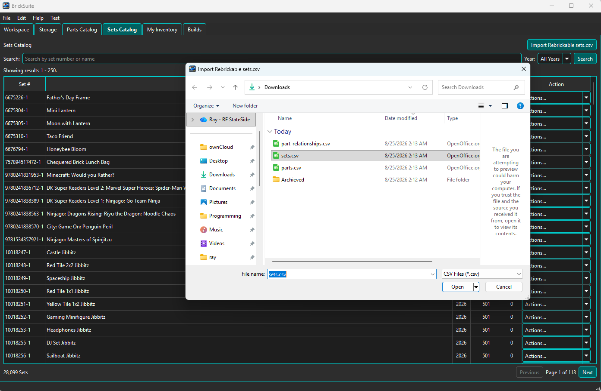
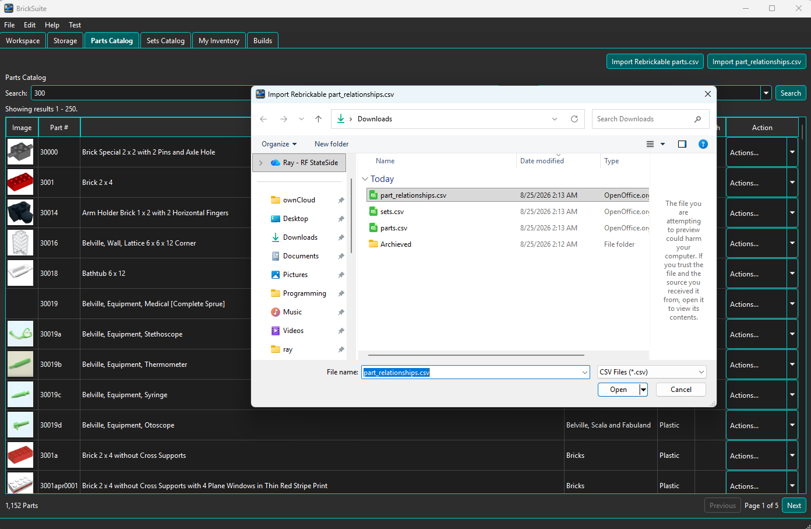
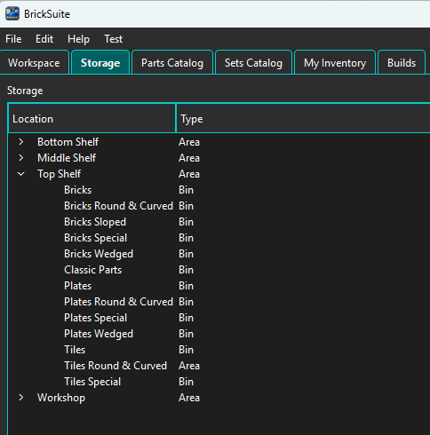
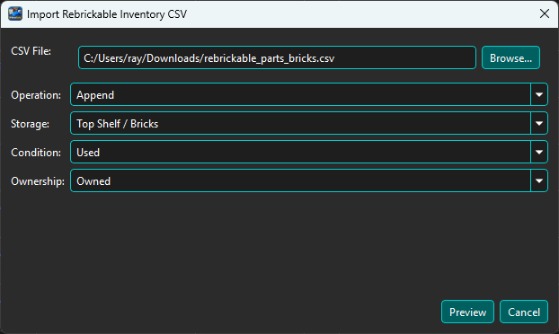

This guide walks through the initial setup that prepares a new BrickSuite installation for normal use. Follow the steps in order after installing BrickSuite and creating your first Workspace.
If you want an introduction to BrickSuite concepts first, see Getting Started. This Quick Start focuses on the configuration and reference-data steps needed to make the application fully useful.
On first launch, create the Workspace that will represent your brick workshop or collection. BrickSuite creates and initializes its local database automatically. After the Workspace is created, select it and continue with the configuration below.
Tip: Most users need only one primary Workspace. You can change its name and description later.
Required for Rebrickable-backed features. Open Settings → APIs → Rebrickable. Obtain an API key from your Rebrickable account/API settings, enter the key in BrickSuite, and choose Test Connection. A successful test changes the connection status to Connected.

BrickSuite routes Rebrickable requests through a shared queue and observes the configured minimum request interval. Leave the default interval in place unless you have a specific reason to change it.
Important: Do not share screenshots containing a visible API key. The Show API key option is intended only when you need to verify the value locally.
Recommended. Open Settings → APIs → Brickset. Obtain a Brickset API key, enter it in BrickSuite, and choose Test Connection.

When Brickset is connected and remains within the configured daily request threshold, BrickSuite can use Brickset to enrich supported Set information. If Brickset is unavailable or the threshold is reached, supported workflows can fall back to Rebrickable.
BrickSuite uses local Rebrickable catalog data for normal catalog browsing and several Build and inventory workflows. Download the required catalog files from Rebrickable's LEGO Catalog Database Downloads page.

For initial setup, obtain the CSV data used by BrickSuite for:
parts.csv — Parts Catalog reference data.sets.csv — Sets Catalog reference data.part_relationships.csv — relationships between related/replacement part numbers.For Parts and Sets, BrickSuite accepts either the downloaded ZIP archive directly or the
extracted CSV. Extract part_relationships.csv before importing it.
Open Parts Catalog and use the Import Rebrickable Parts (CSV/ZIP) button. Select
the downloaded ZIP or an extracted parts.csv file and confirm the import.

The import adds new parts and updates changed provider data. Parts already stored in BrickSuite are not deleted simply because they are absent from the imported CSV. When processing finishes, BrickSuite reports the number of rows read and how many records were new, updated, unchanged, or skipped.
Open Sets Catalog and use the Import Rebrickable Sets (CSV/ZIP) button. Select the
downloaded ZIP or an extracted sets.csv file and allow the import to complete.

This populates or refreshes the local Sets Catalog so Set searches and supported Set/Build workflows have current reference data available without requiring a live API call for ordinary catalog browsing.
Import the extracted part_relationships.csv file using the
Import part_relationships.csv button. These relationships allow BrickSuite to recognize
supported relationships between part numbers when evaluating inventory and Build requirements.

Do not skip this step. Part relationship data is needed for relationship-aware inventory and Build functionality to work as intended.
Open Storage and model the physical locations where your loose parts are kept. Create a hierarchy that makes sense when you are standing in front of the real storage.

A hierarchy can contain locations such as Areas, Cabinets, Shelves, Cases, Drawers, Bins, Trays, Compartments, and Dividers. Inventory should ultimately point to the active location where the parts can actually be found.
See Storage for the complete storage workflow.
You can add parts manually from the Parts Catalog or use My Inventory → Import CSV to load an owned-parts CSV exported from Rebrickable. For a CSV import, choose the file and review the import operation, destination Storage location, Condition, and Ownership before continuing to the preview.

Use Preview to review the import before committing it. This is especially useful when loading a larger inventory or when you want to verify the destination Storage location first.
See Rebrickable Import for the full preview and import workflow.
Before entering a large amount of inventory, perform a quick check:
If these checks succeed, BrickSuite is ready for normal use. You can continue organizing loose inventory, creating Sets and MOC Builds, allocating available parts, identifying shortages, and using the other BrickSuite workflows documented in Help.
After initial setup—and regularly thereafter—use File → Backup Database to create a verified backup of your BrickSuite database. See Backup / Restore for details.